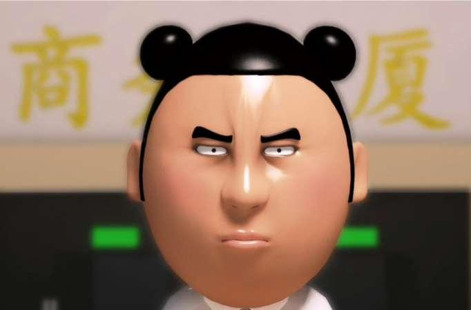

Main Content Area
夯大力 (Hāng Dàlì) is a well-loved character from the GGBond series, known for his strength, loyalty, and humorous personality. As one of GGBond’s close friends, he brings a powerful yet light-hearted dynamic to the team, often using his impressive physical strength to help out in tricky situations. Although he might not always be the quickest to understand things, his strong sense of loyalty and determination make him an invaluable ally in their adventures. His character also adds comic relief to the series, endearing him to viewers with his innocence and well-meaning nature. Like GGBond, 夯大力 inspires young audiences, showing that everyone brings unique strengths to a team and that kindness and loyalty are just as important as bravery and intelligence.
